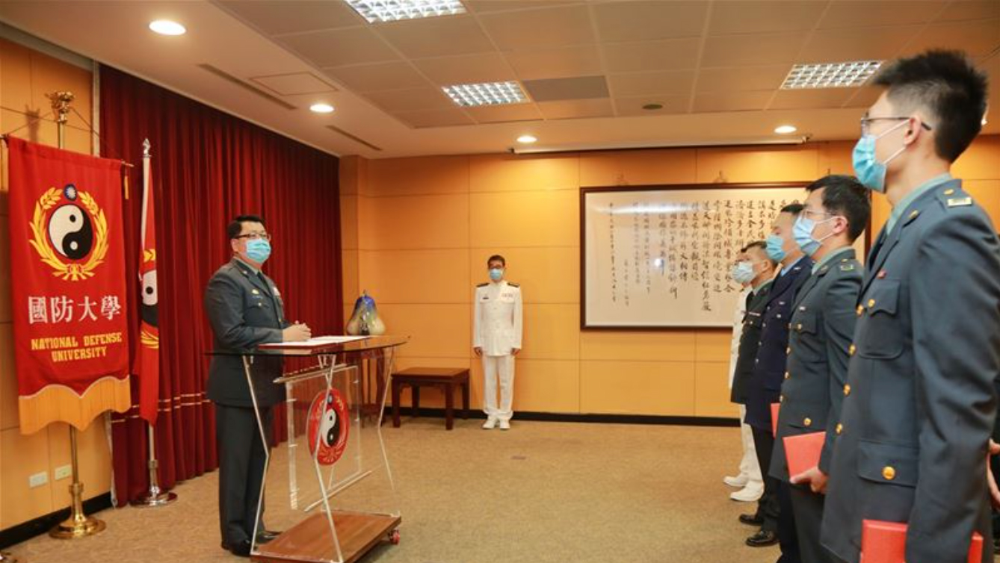

-
網路戰聯隊
國防大學昨日舉行民國111年7月份晉任典禮，由教育長程少將主持，程教育長致詞時首先恭賀並肯定晉任人員在工作上的認真付出，並要大家感謝在背後默默支持陪伴的家人眷屬，同時期勉在場人員秉持積極進取的態度與創新思維，共同推動校務發展，為國軍培育優秀人才。國防大學昨日舉行民國111年7月份晉任典禮，由教育長程少將主持，程教育長致詞時首先恭賀並肯定晉任人員在工作上的認真付出，並要大家感謝在背後默默支持陪伴的家人眷屬，同時期勉在場人員秉持積極進取的態度與創新思維，共同推動校務發展，為國軍培育優秀人才。國防大學昨日舉行民國111年7月份晉任典禮，由教育長程少將主持，程教育長致詞時首先恭賀並肯定晉任人員在工作上的認真付出，並要大家感謝在背後默默支持陪伴的家人眷屬，同時期勉在場人員秉持積極進取的態度與創新思維，共同推動校務發展，為國軍培育優秀人才。國防大學昨日舉行民國111年7月份晉任典禮，由教育長程少將主持，程教育長致詞時首先恭賀並肯定晉任人員在工作上的認真付出，並要大家感謝在背後默默支持陪伴的家人眷屬，同時期勉在場人員秉持積極進取的態度與創新思維，共同推動校務發展，為國軍培育優秀人才。國防大學昨日舉行民國111年7月份晉任典禮，由教育長程少將主持，程教育長致詞時首先恭賀並肯定晉任人員在工作上的認真付出，並要大家感謝在背後默默支持陪伴的家人眷屬，同時期勉在場人員秉持積極進取的態度與創新思維，共同推動校務發展，為國軍培育優秀人才。國防大學昨日舉行民國111年7月份晉任典禮，由教育長程少將主持，程教育長致詞時首先恭賀並肯定晉任人員在工作上的認真付出，並要大家感謝在背後默默支持陪伴的家人眷屬，同時期勉在場人員秉持積極進取的態度與創新思維，共同推動校務發展，為國軍培育優秀人才。國防大學昨日舉行民國111年7月份晉任典禮，由教育長程少將主持，程教育長致詞時首先恭賀並肯定晉任人員在工作上的認真付出，並要大家感謝在背後默默支持陪伴的家人眷屬，同時期勉在場人員秉持積極進取的態度與創新思維，共同推動校務發展，為國軍培育優秀人才。國防大學昨日舉行民國111年7月份晉任典禮，由教育長程少將主持，程教育長致詞時首先恭賀並肯定晉任人員在工作上的認真付出，並要大家感謝在背後默默支持陪伴的家人眷屬，同時期勉在場人員秉持積極進取的態度與創新思維，共同推動校務發展，為國軍培育優秀人才。國防大學昨日舉行民國111年7月份晉任典禮，由教育長程少將主持，程教育長致詞時首先恭賀並肯定晉任人員在工作上的認真付出，並要大家感謝在背後默默支持陪伴的家人眷屬，同時期勉在場人員秉持積極進取的態度與創新思維，共同推動校務發展，為國軍培育優秀人才。國防大學昨日舉行民國111年7月份晉任典禮，由教育長程少將主持，程教育長致詞時首先恭賀並肯定晉任人員在工作上的認真付出，並要大家感謝在背後默默支持陪伴的家人眷屬，同時期勉在場人員秉持積極進取的態度與創新思維，共同推動校務發展，為國軍培育優秀人才。國防大學昨日舉行民國111年7月份晉任典禮，由教育長程少將主持，程教育長致詞時首先恭賀並肯定晉任人員在工作上的認真付出，並要大家感謝在背後默默支持陪伴的家人眷屬，同時期勉在場人員秉持積極進取的態度與創新思維，共同推動校務發展，為國軍培育優秀人才。國防大學昨日舉行民國111年7月份晉任典禮，由教育長程少將主持，程教育長致詞時首先恭賀並肯定晉任人員在工作上的認真付出，並要大家感謝在背後默默支持陪伴的家人眷屬，同時期勉在場人員秉持積極進取的態度與創新思維，共同推動校務發展，為國軍培育優秀人才。國防大學昨日舉行民國111年7月份晉任典禮，由教育長程少將主持，程教育長致詞時首先恭賀並肯定晉任人員在工作上的認真付出，並要大家感謝在背後默默支持陪伴的家人眷屬，同時期勉在場人員秉持積極進取的態度與創新思維，共同推動校務發展，為國軍培育優秀人才。國防大學昨日舉行民國111年7月份晉任典禮，由教育長程少將主持，程教育長致詞時首先恭賀並肯定晉任人員在工作上的認真付出，並要大家感謝在背後默默支持陪伴的家人眷屬，同時期勉在場人員秉持積極進取的態度與創新思維，共同推動校務發展，為國軍培育優秀人才。國防大學昨日舉行民國111年7月份晉任典禮，由教育長程少將主持，程教育長致詞時首先恭賀並肯定晉任人員在工作上的認真付出，並要大家感謝在背後默默支持陪伴的家人眷屬，同時期勉在場人員秉持積極進取的態度與創新思維，共同推動校務發展，為國軍培育優秀人才。國防大學昨日舉行民國111年7月份晉任典禮，由教育長程少將主持，程教育長致詞時首先恭賀並肯定晉任人員在工作上的認真付出，並要大家感謝在背後默默支持陪伴的家人眷屬，同時期勉在場人員秉持積極進取的態度與創新思維，共同推動校務發展，為國軍培育優秀人才。國防大學昨日舉行民國111年7月份晉任典禮，由教育長程少將主持，程教育長致詞時首先恭賀並肯定晉任人員在工作上的認真付出，並要大家感謝在背後默默支持陪伴的家人眷屬，同時期勉在場人員秉持積極進取的態度與創新思維，共同推動校務發展，為國軍培育優秀人才。國防大學昨日舉行民國111年7月份晉任典禮，由教育長程少將主持，程教育長致詞時首先恭賀並肯定晉任人員在工作上的認真付出，並要大家感謝在背後默默支持陪伴的家人眷屬，同時期勉在場人員秉持積極進取的態度與創新思維，共同推動校務發展，為國軍培育優秀人才。進取的態度與創新思維，共同推動校務發展，為國軍培育優秀人才。國防大學昨日舉行民國111年7月份晉任典禮，由教育長程少將主持，程教育長致詞時首先恭賀並肯定晉任人員在工作上的認真付出，並要大家感謝在背後默默支持陪伴的家人眷屬，同時期勉在場人員秉持積極進取的態度與創新思維，共同推動校務發展，為國軍培育優秀人才。國防大學昨日舉行民國111年7月份晉任典禮，由教育長程少將主持，程教育長致詞時首先恭賀並肯定晉任人員在工作上的認真付出，並要大家感謝在背後默默支持陪伴的家人眷屬，同時期勉在場人員秉持積極進取的態度與創新思維，共同推動校務發展，為國軍培育優秀人才。國防大學昨日舉行民國111年7月份晉任典禮，由教育長程少將主持，程教育長致詞時首先恭賀並肯定晉任人員在工作上的認真付出，並要大家感謝在背後默默支持陪伴的家人眷屬，同時期勉在場人員秉持積極進取的態度與創新思維，共同推動校務發展，為國軍培育優秀人才。國防大學昨日舉行民國111年7月份晉任典禮，由教育長程少將主持，程教育長致詞時首先恭賀並肯定晉任人員在工作上的認真付出，並要大家感謝在背後默默支持陪伴的家人眷屬，同時期勉在場人員秉持積極進取的態度與創新思維，共同推動校務發展，為國軍培育優秀人才。國防大學昨日舉行民國111年7月份晉任典禮，由教育長程少將主持，程教育長致詞時首先恭賀並肯定晉任人員在工作上的認真付出，並要大家感謝在背後默默支持陪伴的家人眷屬，同時期勉在場人員秉持積極進取的態度與創新思維，共同推動校務發展，為國軍培育優秀人才。國防大學昨日舉行民國111年7月份晉任典禮，由教育長程少將主持，程教育長致詞時首先恭賀並肯定晉任人員在工作上的認真付出，並要大家感謝在背後默默支持陪伴的家人眷屬，同時期勉在場人員秉持積極進取的態度與創新思維，共同推動校務發展，為國軍培育優秀人才。國防大學昨日舉行民國111年7月份晉任典禮，由教育長程少將主持，程教育長致詞時首先恭賀並肯定晉任人員在工作上的認真付出，並要大家感謝在背後默默支持陪伴的家人眷屬，同時期勉在場人員秉持積極進取的態度與創新思維，共同推動校務發展，為國軍培育優秀人才。國防大學昨日舉行民國111年7月份晉任典禮，由教育長程少將主持，程教育長致詞時首先恭賀並肯定晉任人員在工作上的認真付出，並要大家感謝在背後默默支持陪伴的家人眷屬，同時期勉在場人員秉持積極進取的態度與創新思維，共同推動校務發展，為國軍培育優秀人才。國防大學昨日舉行民國111年7月份晉任典禮，由教育長程少將主持，程教育長致詞時首先恭賀並肯定晉任人員在工作上的認真付出，並要大家感謝在背後默默支持陪伴的家人眷屬，同時期勉在場人員秉持積極進取的態度與創新思維，共同推動校務發展，為國軍培育優秀人才。國防大學昨日舉行民國111年7月份晉任典禮，由教育長程少將主持，程教育長致詞時首先恭賀並肯定晉任人員在工作上的認真付出，並要大家感謝在背後默默支持陪伴的家人眷屬，同時期勉在場人員秉持積極進取的態度與創新思維，共同推動校務發展，為國軍培育優秀人才。進取的態度與創新思維，共同推動校務發展，為國軍培育優秀人才。國防大學昨日舉行民國111年7月份晉任典禮，由教育長程少將主持，程教育長致詞時首先恭賀並肯定晉任人員在工作上的認真付出，並要大家感謝在背後默默支持陪伴的家人眷屬，同時期勉在場人員秉持積極進取的態度與創新思維，共同推動校務發展，為國軍培育優秀人才。國防大學昨日舉行民國111年7月份晉任典禮，由教育長程少將主持，程教育長致詞時首先恭賀並肯定晉任人員在工作上的認真付出，並要大家感謝在背後默默支持陪伴的家人眷屬，同時期勉在場人員秉持積極進取的態度與創新思維，共同推動校務發展，為國軍培育優秀人才。國防大學昨日舉行民國111年7月份晉任典禮，由教育長程少將主持，程教育長致詞時首先恭賀並肯定晉任人員在工作上的認真付出，並要大家感謝在背後默默支持陪伴的家人眷屬，同時期勉在場人員秉持積極進取的態度與創新思維，共同推動校務發展，為國軍培育優秀人才。國防大學昨日舉行民國111年7月份晉任典禮，由教育長程少將主持，程教育長致詞時首先恭賀並肯定晉任人員在工作上的認真付出，並要大家感謝在背後默默支持陪伴的家人眷屬，同時期勉在場人員秉持積極進取的態度與創新思維，共同推動校務發展，為國軍培育優秀人才。國防大學昨日舉行民國111年7月份晉任典禮，由教育長程少將主持，程教育長致詞時首先恭賀並肯定晉任人員在工作上的認真付出，並要大家感謝在背後默默支持陪伴的家人眷屬，同時期勉在場人員秉持積極進取的態度與創新思維，共同推動校務發展，為國軍培育優秀人才。國防大學昨日舉行民國111年7月份晉任典禮，由教育長程少將主持，程教育長致詞時首先恭賀並肯定晉任人員在工作上的認真付出，並要大家感謝在背後默默支持陪伴的家人眷屬，同時期勉在場人員秉持積極進取的態度與創新思維，共同推動校務發展，為國軍培育優秀人才。國防大學昨日舉行民國111年7月份晉任典禮，由教育長程少將主持，程教育長致詞時首先恭賀並肯定晉任人員在工作上的認真付出，並要大家感謝在背後默默支持陪伴的家人眷屬，同時期勉在場人員秉持積極進取的態度與創新思維，共同推動校務發展，為國軍培育優秀人才。國防大學昨日舉行民國111年7月份晉任典禮，由教育長程少將主持，程教育長致詞時首先恭賀並肯定晉任人員在工作上的認真付出，並要大家感謝在背後默默支持陪伴的家人眷屬，同時期勉在場人員秉持積極進取的態度與創新思維，共同推動校務發展，為國軍培育優秀人才。國防大學昨日舉行民國111年7月份晉任典禮，由教育長程少將主持，程教育長致詞時首先恭賀並肯定晉任人員在工作上的認真付出，並要大家感謝在背後默默支持陪伴的家人眷屬，同時期勉在場人員秉持積極進取的態度與創新思維，共同推動校務發展，為國軍培育優秀人才。國防大學昨日舉行民國111年7月份晉任典禮，由教育長程少將主持，程教育長致詞時首先恭賀並肯定晉任人員在工作上的認真付出，並要大家感謝在背後默默支持陪伴的家人眷屬，同時期勉在場人員秉持積極進取的態度與創新思維，共同推動校務發展，為國軍培育優秀人才。進取的態度與創新思維，共同推動校務發展，為國軍培育優秀人才。國防大學昨日舉行民國111年7月份晉任典禮，由教育長程少將主持，程教育長致詞時首先恭賀並肯定晉任人員在工作上的認真付出，並要大家感謝在背後默默支持陪伴的家人眷屬，同時期勉在場人員秉持積極進取的態度與創新思維，共同推動校務發展，為國軍培育優秀人才。國防大學昨日舉行民國111年7月份晉任典禮，由教育長程少將主持，程教育長致詞時首先恭賀並肯定晉任人員在工作上的認真付出，並要大家感謝在背後默默支持陪伴的家人眷屬，同時期勉在場人員秉持積極進取的態度與創新思維，共同推動校務發展，為國軍培育優秀人才。國防大學昨日舉行民國111年7月份晉任典禮，由教育長程少將主持，程教育長致詞時首先恭賀並肯定晉任人員在工作上的認真付出，並要大家感謝在背後默默支持陪伴的家人眷屬，同時期勉在場人員秉持積極進取的態度與創新思維，共同推動校務發展，為國軍培育優秀人才。國防大學昨日舉行民國111年7月份晉任典禮，由教育長程少將主持，程教育長致詞時首先恭賀並肯定晉任人員在工作上的認真付出，並要大家感謝在背後默默支持陪伴的家人眷屬，同時期勉在場人員秉持積極進取的態度與創新思維，共同推動校務發展，為國軍培育優秀人才。國防大學昨日舉行民國111年7月份晉任典禮，由教育長程少將主持，程教育長致詞時首先恭賀並肯定晉任人員在工作上的認真付出，並要大家感謝在背後默默支持陪伴的家人眷屬，同時期勉在場人員秉持積極進取的態度與創新思維，共同推動校務發展，為國軍培育優秀人才。國防大學昨日舉行民國111年7月份晉任典禮，由教育長程少將主持，程教育長致詞時首先恭賀並肯定晉任人員在工作上的認真付出，並要大家感謝在背後默默支持陪伴的家人眷屬，同時期勉在場人員秉持積極進取的態度與創新思維，共同推動校務發展，為國軍培育優秀人才。國防大學昨日舉行民國111年7月份晉任典禮，由教育長程少將主持，程教育長致詞時首先恭賀並肯定晉任人員在工作上的認真付出，並要大家感謝在背後默默支持陪伴的家人眷屬，同時期勉在場人員秉持積極進取的態度與創新思維，共同推動校務發展，為國軍培育優秀人才。國防大學昨日舉行民國111年7月份晉任典禮，由教育長程少將主持，程教育長致詞時首先恭賀並肯定晉任人員在工作上的認真付出，並要大家感謝在背後默默支持陪伴的家人眷屬，同時期勉在場人員秉持積極進取的態度與創新思維，共同推動校務發展，為國軍培育優秀人才。國防大學昨日舉行民國111年7月份晉任典禮，由教育長程少將主持，程教育長致詞時首先恭賀並肯定晉任人員在工作上的認真付出，並要大家感謝在背後默默支持陪伴的家人眷屬，同時期勉在場人員秉持積極進取的態度與創新思維，共同推動校務發展，為國軍培育優秀人才。國防大學昨日舉行民國111年7月份晉任典禮，由教育長程少將主持，程教育長致詞時首先恭賀並肯定晉任人員在工作上的認真付出，並要大家感謝在背後默默支持陪伴的家人眷屬，同時期勉在場人員秉持積極進取的態度與創新思維，共同推動校務發展，為國軍培育優秀人才。進取的態度與創新思維，共同推動校務發展，為國軍培育優秀人才。國防大學昨日舉行民國111年7月份晉任典禮，由教育長程少將主持，程教育長致詞時首先恭賀並肯定晉任人員在工作上的認真付出，並要大家感謝在背後默默支持陪伴的家人眷屬，同時期勉在場人員秉持積極進取的態度與創新思維，共同推動校務發展，為國軍培育優秀人才。國防大學昨日舉行民國111年7月份晉任典禮，由教育長程少將主持，程教育長致詞時首先恭賀並肯定晉任人員在工作上的認真付出，並要大家感謝在背後默默支持陪伴的家人眷屬，同時期勉在場人員秉持積極進取的態度與創新思維，共同推動校務發展，為國軍培育優秀人才。國防大學昨日舉行民國111年7月份晉任典禮，由教育長程少將主持，程教育長致詞時首先恭賀並肯定晉任人員在工作上的認真付出，並要大家感謝在背後默默支持陪伴的家人眷屬，同時期勉在場人員秉持積極進取的態度與創新思維，共同推動校務發展，為國軍培育優秀人才。國防大學昨日舉行民國111年7月份晉任典禮，由教育長程少將主持，程教育長致詞時首先恭賀並肯定晉任人員在工作上的認真付出，並要大家感謝在背後默默支持陪伴的家人眷屬，同時期勉在場人員秉持積極進取的態度與創新思維，共同推動校務發展，為國軍培育優秀人才。國防大學昨日舉行民國111年7月份晉任典禮，由教育長程少將主持，程教育長致詞時首先恭賀並肯定晉任人員在工作上的認真付出，並要大家感謝在背後默默支持陪伴的家人眷屬，同時期勉在場人員秉持積極進取的態度與創新思維，共同推動校務發展，為國軍培育優秀人才。國防大學昨日舉行民國111年7月份晉任典禮，由教育長程少將主持，程教育長致詞時首先恭賀並肯定晉任人員在工作上的認真付出，並要大家感謝在背後默默支持陪伴的家人眷屬，同時期勉在場人員秉持積極進取的態度與創新思維，共同推動校務發展，為國軍培育優秀人才。國防大學昨日舉行民國111年7月份晉任典禮，由教育長程少將主持，程教育長致詞時首先恭賀並肯定晉任人員在工作上的認真付出，並要大家感謝在背後默默支持陪伴的家人眷屬，同時期勉在場人員秉持積極進取的態度與創新思維，共同推動校務發展，為國軍培育優秀人才。國防大學昨日舉行民國111年7月份晉任典禮，由教育長程少將主持，程教育長致詞時首先恭賀並肯定晉任人員在工作上的認真付出，並要大家感謝在背後默默支持陪伴的家人眷屬，同時期勉在場人員秉持積極進取的態度與創新思維，共同推動校務發展，為國軍培育優秀人才。國防大學昨日舉行民國111年7月份晉任典禮，由教育長程少將主持，程教育長致詞時首先恭賀並肯定晉任人員在工作上的認真付出，並要大家感謝在背後默默支持陪伴的家人眷屬，同時期勉在場人員秉持積極進取的態度與創新思維，共同推動校務發展，為國軍培育優秀人才。國防大學昨日舉行民國111年7月份晉任典禮，由教育長程少將主持，程教育長致詞時首先恭賀並肯定晉任人員在工作上的認真付出，並要大家感謝在背後默默支持陪伴的家人眷屬，同時期勉在場人員秉持積極進取的態度與創新思維，共同推動校務發展，為國軍培育優秀人才。 -
資訊通信聯隊
在您於本網站使用聯絡我們、訊息訂閱、活動報名等各種功能時，本所將會在上述蒐集目的之必要範圍內，就您提供之個人資料提供予本所及本所之複委任人，並在本所或複委任人所在之國家或地區進行資料處理或利用。 -

電子戰中心
在您於本網站使用聯絡我們、訊息訂閱、活動報名等各種功能時，本所將會在上述蒐集目的之必要範圍內，就您提供之個人資料提供予本所及本所之複委任人，並在本所或複委任人所在之國家或地區進行資料處理或利用。 -
訓測中心
在您於本網站使用聯絡我們、訊息訂閱、活動報名等各種功能時，本所將會在上述蒐集目的之必要範圍內，就您提供之個人資料提供予本所及本所之複委任人，並在本所或複委任人所在之國家或地區進行資料處理或利用。 -
招募專區
在您於本網站使用聯絡我們、訊息訂閱、活動報名等各種功能時，本所將會在上述蒐集目的之必要範圍內，就您提供之個人資料提供予本所及本所之複委任人，並在本所或複委任人所在之國家或地區進行資料處理或利用。
最新消息
-

督察室
2021.12.10
發布人員
國防大學教育長主持晉任典禮 肯定辛勤付出國防大學教育長主持晉任典禮 肯定辛勤付出國防大學教育長主持晉任典禮 肯定辛勤付出 國防大學教育長主持晉任典禮 肯定辛勤付出國防大學教育長主持晉任典禮 肯定辛勤付出國防大學教育長主持晉任典禮 肯定辛勤付出國防大學昨日舉行民國111年7月份晉任典禮，由教育長程少將主持，程教育長致詞時首先恭賀並肯定晉任人員在工作上的認真付出，並要大家感謝在背後默默支持陪伴的家人眷屬，同時期勉在場人員秉持積極進取的態度與創新思維，共同推動校務發展，為國軍培育優秀人才。 -
督察室
2021.12.10
發布人員
國防大學教育長主持晉任典禮 肯定辛勤付出國防大學教育長主持晉任典禮 肯定辛勤付出國防大學教育長主持晉任典禮 肯定辛勤付出國防大學昨日舉行民國111年7月份晉任典禮，由教育長程少將主持，程教育長致詞時首先恭賀並肯定晉任人員在工作上的認真付出，並要大家感謝在背後默默支持陪伴的家人眷屬，同時期勉在場人員秉持積極進取的態度與創新思維，共同推動校務發展，為國軍培育優秀人才。國防大學昨日舉行民國111年7月份晉任典禮，由教育長程少將主持，程教育長致詞時首先恭賀並肯定晉任人員在工作上的認真付出，並要大家感謝在背後默默支持陪伴的家人眷屬，同時期勉在場人員秉持積極進取的態度與創新思維，共同推動校務發展，為國軍培育優秀人才。